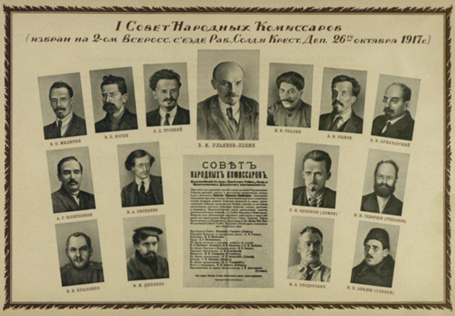
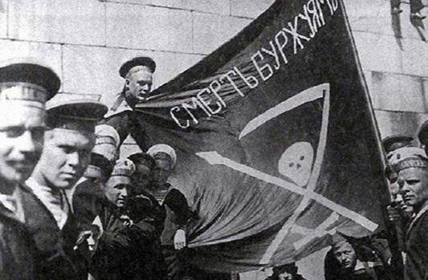
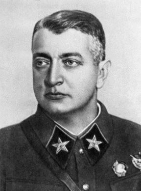
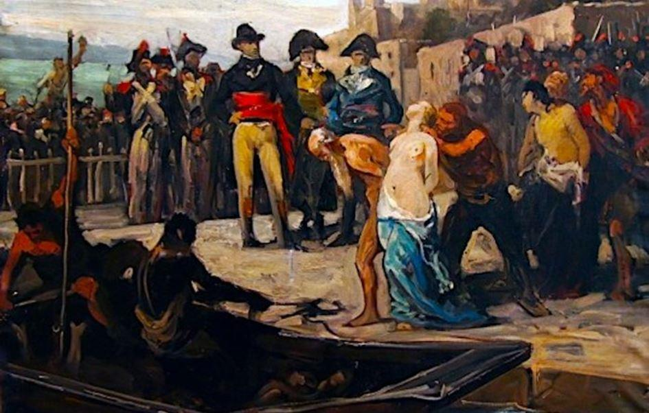
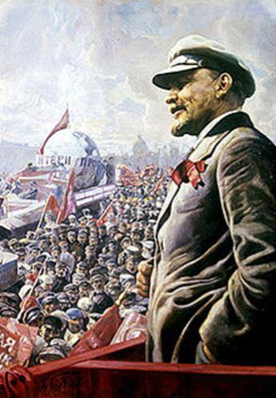

Le 5 septembre 1918, le Sovnarkom (Conseil des commissaires du peuple) promulgue un décret lançant officiellement la Terreur rouge. Cet oukase appelle à « isoler les ennemis de classe de la République soviétique dans des camps de concentration, et de fusiller sur-le-champ tout individu impliqué dans des organisations de Gardes Blancs, des insurrections ou des émeutes ».
En réalité, la Terreur a déjà été instituée le 7 décembre 1917, quelques semaines à peine après le coup d’état judéo-bolchevique d’octobre, avec la création de la « Commission extraordinaire panrusse près le Conseil des commissaires du peuple pour combattre la contre-révolution et le sabotage », la sinistre Vetcheka.
Cet organe, alors qu’il n’est pas encore question de guerre civile ― mais ce sera là le grand argument révisionniste des hagiographes de la révolution pour justifier les fleuves de sang que firent couler la lie de Brooklyn arrivée à Saint Pétersbourg, dans les bagages de Trotsky… lui-même financé par Wall Street¹, notamment par le germano-américain Jacob Schiff, antistariste rabique qui, en 1904, finança le Japon dans sa guerre contre la Russie impériale ― va monter en puissance meurtrière à la vitesse de l’éclair pour devenir le bras armé de la Terreur.
Les événements déclencheurs à cette officialisation de la Terreur interviennent le 30 août. Ce jour-là Moïsseï Solomonovitch Ouritsky, chef de la Tcheka de Pétrograd, est assassiné.
À Moscou, Lénine, lui, est la cible de la judéenne Fanny Kaplan, militante du Parti social-révolutionnaire ― à sa façon une émule de Charlotte Corday². L’un des projectiles logés dans le cou du despote asiatique, ne pourra être extrait, qu’à grande difficulté, quelques années plus tard.
Au demeurant, dès le 11 août, le bénévole Lénine qui, tout comme Robespierre s’était déclaré en faveur de l’abolition de la peine de mort, ordonne de « pendre publiquement, afin que tout le monde puisse le voir, au moins cent koulaks ».
Entre le 31 août et le 4 septembre, 1 300 « otages de la bourgeoisie » sont massacrés par des détachements de la Tcheka dans des prisons de Petrograd, la nouvelle Saint Pétersbourg, et de Kronstadt.
De septembre à octobre, 15 000 autres seront liquidés à Moscou, Nijni Novgorod, Viatka, Perm, Ivanovo-Voznessensk, Tver et Toula. Le nombre d'exécutions commises par la Tcheka en deux semaines est trois fois supérieur à celui de toutes les condamnations à la peine capitale appliquées en un siècle par la justice de l’Empire. Une justice connue pour sa mansuétude, qui envoyait les pires terroristes en villégiature en Sibérie, en leur octroyant une honorable pension pour leur subsistance… Ce fut le cas de Trotsky à la fin de la révolution manquée de 1905, et de Lénine de 1897 à 1900. Ce dernier coula des jours heureux dans sa datcha de Chouchenskoïé, chassant, lisant, conversant avec ses amis et son épouse, Nadejda Konstantinova Kroupskaïa. Comme quoi le libéralisme est effectivement assez stupide pour offrir à ses bourreaux la corde qui servira à le pendre…
TERREUR JUDÉO-BOLCHÉVIQUE ET JACOBINISME
Politiquement, le mot terreur renvoie évidemment à la Terreur exercée par les Jacobins, lors de la Révolution française. Est-il utile de dire et de souligner que Lénine dont la fascination pour Robespierre est connue, fut, à la suite de Karl Marx, un fervent admirateur de la Convention, de ses politiques, de sa terrible répression à l’encontre de ceux qui ne se montraient pas de zélés républicains…
Pensons à Jean-Baptiste Carrier à Nantes³. Il est assuré que le génocide des vendéens a servi de modèle pour le véritable « classicide » qui se met en place en août 1918. Il ne vise pas seulement des classes sociales par nature hostiles au communisme (nobles, fonctionnaires, bourgeois), mais toutes les classes de la société, et en premier lieu les ouvriers et paysans qui se révoltent contre la cruauté de leurs nouveaux maîtres. Le régime va rapidement les mettre au pas. Ce « classicide » va également rapidement concerner dans les zones sensibles des classes d’âge, celles qui, par exemple, seront restées fidèles à la foi orthodoxe, et qui seront décimées ou déportées pour l’exploitation et la mise en valeur de la Sibérie.
On se souviendra aussi des Marins de Cronstadt. Ceux-ci ne réclamaient qu’un peu de démocratie réelle et le rétablissement des soviets ― conseils ouvriers qui ne furent au final qu’un « argument vendeur » pour soutenir le changement de régime avant de devenir rapidement une fiction. Leur révolte fut écrasée le 18 mars 1921 au prix d’une dizaine de milliers de morts, sur ordre express de Trotsky, alors que Lénine venait de faire voter la « Nouvelle économie politique » (NEP : un authentique retour au capitalisme de libre entreprise), le 12 mars précédent, à l’occasion du Xe Congrès du Parti communiste russe, vote qui marquait un terrifiant aveu d’échec. Lénine eut beau avoir « changé la Russie en fleuve de sang », il ne put que constater la réalité de la débâcle. De 1918 à 1921, le communisme de guerre avait plongé le pays, ruiné et exsangue, dans un état de faillite totale. Lénine, impuissant et stérile, dut alors en effet faire face à une gigantesque famine qui frappa quelque trente millions de moujiks⁴…
LA LIQUIDATION MÉTHODIQUE DU PROLÉTARIAT
Le soulèvement des paysans de la région de Tambov fait rage depuis un an. Traité à coup de gaz de combat par le camarade Trotsky, commissaire du peuple pour l’Armée et les Affaires navales. Là encore la responsabilité en sera imputée à ses subordonnés, et en particulier au général Mikhaïl Nikolaïevitch Toukhatchevski qui, promu maréchal sera exécuté le 12 juin 1937, au cours des grandes purges staliniennes … la révolution dévore aussi les siens ! Le bilan paysan est lourd.
Une Commission plénipotentiaire du comité central exécutif panrusse du parti bolchevik pour la liquidation du banditisme dans le gouvernement de Tambov a été mise sur pied. La révolte est écrasée par l’Armée rouge. Le futur maréchal Joukov y gagne sa première décoration en récompense du succès de l’opération contre cette « nouvelle Vendée ».
Celle-ci mobilisa plus de 30 000 hommes, soutenus par des détachements spéciaux de la Tcheka avec, en appui feu, de l’artillerie lourde et des trains blindés. Si Toukhatchevski, le 12 juillet 1921, avait pu dire : « les forêts où les bandits se cachent doivent être nettoyées par l'utilisation de gaz asphyxiants. Ceci doit être soigneusement calculé afin que la couche de gaz pénètre les forêts et tue quiconque s'y cache », la décision est intervenue par ordonnances du commandement de l’Armée rouge (Trotsky) et de la Direction du parti bolchevik, ordonnances qui ne sont pas sans rappeler singulièrement les instructions envoyées par la Convention aux exterminateurs de la Vendée en armes. Ainsi le 1er août 1793, le conventionnel rapporteur du Comité de salut public, Barrère de Vieuzac requérait : « Ici, le Comité, d’après votre autorisation, a préparé des mesures qui tendent à exterminer cette race rebelle, à faire disparaître leurs repères, à incendier leurs forêts, à couper leurs récoltes et à les combattre autant par des ouvriers et des pionniers que par des soldats… L’humanité ne se plaindra pas. C’est faire son bien que d’extirper le mal ; c’est être bienfaisant pour la patrie que de punir les rebelles… l’autorité nationale, sanctionnant de violentes mesures militaires portera l’effroi dans les repaires de brigands et dans les demeures des royalistes ».
À Tambov les autorités bolchéviques ouvrirent sept camps de concentration, où au moins 50 000 personnes furent internées, principalement des femmes, des enfants, des vieillards. La mortalité dans les camps atteignait les 15 à 20 % par mois. Là encore, les analogies sont frappantes avec les deux cruelles Guerres des Boers (1880-1881 et 1899-1902) que la Cité de Londres livra aux paysans afrikaners d’Afrique australe.
En janvier 1921, le chef rebelle russe, le « chouan » Vladimir Antonov-Ovseïenko, recourut à la conscription pour accroître ses forces. Il parvint à former deux armées de 21 régiments chacune avec un effectif total d’environ 20 à 50 000 hommes. Des armées organisées qui possédaient leurs propres insignes et uniformes.
Ce sont ces « antonovsi » que le bolchéviques qualifièrent de « bandes de koulaks, de bandits et de vermine »⁵. Antonov fut tué en 1922. Les pertes parmi la population de la région de Tambov sont de nos jours estimées à 240 000, cent mille paysans et membres de leurs familles ayant été déportés et 15 000 exécutés.
MÊMES CAUSES, MÊMES EFFETS
En France, la loi du 1er octobre 1793, est ainsi présentée par Barère de Vieuzac : « Soldats de la liberté, il faut que les brigands de la Vendée [une authentique insurrection populaire qui compte près d’une centaine de milliers de recrues] soient exterminés avant la fin du mois d’octobre. Le salut de la patrie l’exige, l’impatience du peuple français le commande, son courage doit l’accomplir… La population entière du pays révolté est en rébellion et en armée. Il fallait brûler la première ville, le premier bourg, le premier village qui avait fomenté la révolte… C'est à la Vendée que se reportent les vœux coupables de Marseille, la vénalité honteuse de Toulon, les cris rebelles des Lyonnais, les mouvements de l'Ardèche, les troubles de la Lozère, les conspirations de l'Eure et du Calvados, les espérances de la Sarthe et de la Mayenne, le mauvais esprit d'Angers et les sourdes agitations de quelques départements de l'ancienne Bretagne ». En un mot, toute la France. Décidément révolutions et droit des peuples à disposer d’eux-mêmes font mauvais ménage !
Le 17 octobre 1793, le procès de la reine a eu lieu la veille, Sempronius-Gracchus Vilate dîne avec Barère de Vieuzac, Robespierre et son ami de cœur, Saint-Just. Ce dernier se montre inquiet du nombre croissant d’ennemis de la révolution. Barère, qui est avocat, lui répond que « ces ennemis sont tous les nobles, tous les prêtres, tous les hommes de palais, sans excepter les médecins et la médecine », ajoutant que « le vaisseau de la révolution ne peut arriver au port que sur une mer rougie de flots de sang ». Ce à quoi rétorque Saint-Just : « c'est vrai, une nation ne se régénère que sur des monceaux de cadavres⁶.
1905 LÉNINE THÉORISE LA GUERRE CIVILE
C’est ce raisonnement qui aboutit logiquement à la guerre civile, laquelle justifia en Russie la mise en place du « communisme de guerre », accompagné de la liquidation ― tout aussi logique ―, de la déportation ou de l’internement de tous les opposants ainsi que de la réquisition des biens des riches et des récoltes. Cette guerre intestine est tout sauf un accident fortuit de l’histoire, tout sauf un malheureux concours de circonstances.
« En s'appuyant sur la critique de Marx, qui avait reproché à la Commune de Paris de ne pas s'être attaquée au gouvernement en 1871, Lénine a, au moins depuis 1905, théorisé la guerre civile comme la condition sine qua non de la révolution. C'est elle en effet qui permet d'exterminer la bourgeoisie en tant que classe et de se soustraire au principe démocratique. Se soumettre ou être exterminé : c'est l'alternative annoncée par Lénine dès 1905 dans un article où il s'appuie sur l'exemple de la Vendée de 1793-1794 »⁷.
Bref, « dès 1905 et le Troisième congrès du Parti social-démocrate qui a lieu au printemps à Londres – la Révolution s'est produite au mois de janvier – Lénine commence à parler de terreur de masse, faisant référence à la Révolution française. Pour éviter plusieurs Vendée, une fois la Révolution enclenchée, Lénine juge insuffisant d'exécuter le tsar. Pour que la Révolution réussisse, il faut faire de la prévention afin de tuer dans l'œuf toute forme de résistance antirévolutionnaire. À cet effet, la technique de la terreur est la plus appropriée. Pour écraser la monarchie russe, il faut agir selon lui comme les Jacobins, à travers la terreur de masse ». Oh doux Lénine !
Lénine rédige la même année des « instructions pour la prise de pouvoir révolutionnaire ». Il prône deux activités essentielles : des actions militaires indépendantes et la direction des foules. Il encourage la multiplication des actes terroristes, mais dans une perspective stratégique, dénonçant le terrorisme solitaire, sans lien avec les masses populaires : « Le terrorisme à petite échelle, désordonné et non préparé n’aboutit, s'il est poussé à l'extrême, qu’à éparpiller et gaspiller les forces. Mais d'autre part, on ne saurait non plus en aucun cas oublier que le mot d'ordre de l'insurrection est déjà lancé aujourd’hui »⁸. Quelle différence avec la stratégie de la tension à la manière de Daech ?
Que reste-t-il de la révolution quand Lénine meurt en 1924 ? Un bilan apocalyptique. « À la louche » : meurtres de masse /2 millions ; génocides de classes et ethniques/300 000 à 500 000 Cosaques exterminés sur 3 millions ; déportations, famines organisées/5 millions d’individus morts de faim entre 1921 et 1923.
Pour ce qui est de la classe ouvrière, elle a été engloutie dans la guerre civile et les camps de concentration ; en 1921 il n’en serait resté que 43%. Et pourtant, aujourd’hui encore, la plupart des grandes villes russes abritent des statues monumentales de Lénine !
In fine, une triste vérité émerge ici : à travers les actes, les pensées les paroles et les écrits du révolutionnaire Vladimir Ilitch Oulianov, on voit bien qu’il est le type même du chef totalitaire. C’est pourquoi les Trotsky, Staline, Felix Edmundovitch Dzerjinski ― celui qui sera le boucher de la Russie, chef de la Tcheka ―, et les Iagoda qui plus tard lui succéderont, sont au diapason de la violence du maître, car eux-mêmes sont des violents. Mais, Lénine et son héritier Staline, les surpassent tous en froide cruauté, en cynique férocité. Inutile d’aller chercher les explications alambiquées de psychopathologie clinique. De même qu’il existe des tueurs nés, la nature produit des révolutionnaires, ceci indépendamment des camps idéologiques. Gustave le Bon, grand génie si injustement méconnu, a bien vu cela en son temps. Le bolchévisme marxiste léniniste n’a été au fond qu’une occasion inespérée, pour des tueurs en séries et des mafieux d’envergure, d’exercer leurs talents et leurs vices à l’échelle d’un empire de cent soixante millions d’âmes.
J-M. V.
Notes
1. Cf. Antony Sutton, « Wall Street et la révolution bolchévique » éditions Le Retour aux Sources, 2010, 378 pages.
2. Lire de le récit de son atroce exécution, en présence de sa victime, sous la lame experte d’un bourreau chinois dans le livre de Ferdynand Antoni Ossendowski « Lénine », 1931.
3. Lettre de Carrier au général Haxo en date du 15 décembre 1793 : « Il entre dans mes projets, et ce sont les ordres de la Convention nationale, d’enlever toutes les subsistances, les denrées les fourrages, tout en un mot, de ce maudit pays, de livrer aux flammes tous les bâtiments, car je vais incessamment t’en faire passer l'ordre ».
Bertand Barrère dit de Vieuzac, le 1er octobre 1793 : « La liberté est entrée dans Lyon ! Que maintenant la République se venge : cette ville rebelle doit être ensevelie sous ses ruines… Ce seul mot dira tout : Lyon fit la guerre à la Liberté, Lyon n’est plus ».
5. En décembre, dans « Comment organiser l’émulation ? », Lénine assimilait les paysans propriétaires à des « insectes nuisibles », des « poux », de la « vermine », des « microbes ». Il faut, écrit Lénine, « épurer », « nettoyer », « purger » la société russe des « puces », des « punaises », des « parasites » qui l’infectent. À partir de 1918, l’État bolchevique se trouve confronté à 245 révoltes paysannes de grande ampleur. En 1919, des régions entières passent sous le contrôle des paysans organisés en bande de plusieurs milliers, voire dizaines de milliers d’hommes.
6. Pour aller plus avant on se reportera aux travaux de Marion Sigault.
7. Stéphane Courtois ibid. L’article mentionné serait daté du 12 novembre 1905, or malgré de fastidieuses recherches, ce texte est introuvable dans les « Œuvres complètes [de Lénine] vol. 10 novembre/juin 1905 ». Censure politiquement correcte ?
8. Gérard Chaliand et Arnaud Blin, « Histoire du terrorisme : De l'Antiquité à Al Qaida », éditions Bayard, 2006.
Partager cette page